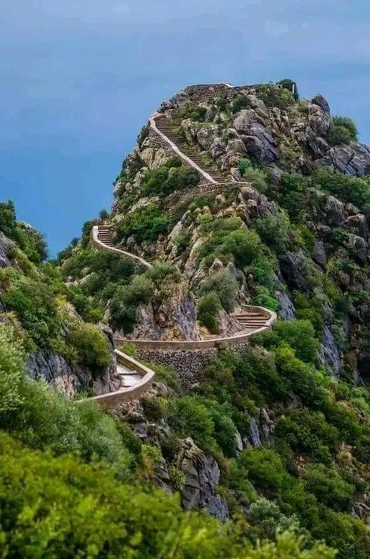

01 — NATURE
Le Pic des Singes
Situé dans les hauteurs de Béjaïa, le Pic des Singes est un site naturel emblématique offrant une vue spectaculaire sur la mer Méditerranée, le Cap Carbon et toute la baie de Béjaïa. C'est également un lieu apprécié pour ses singes magots qui évoluent dans leur environnement naturel.